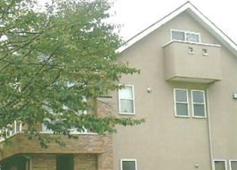
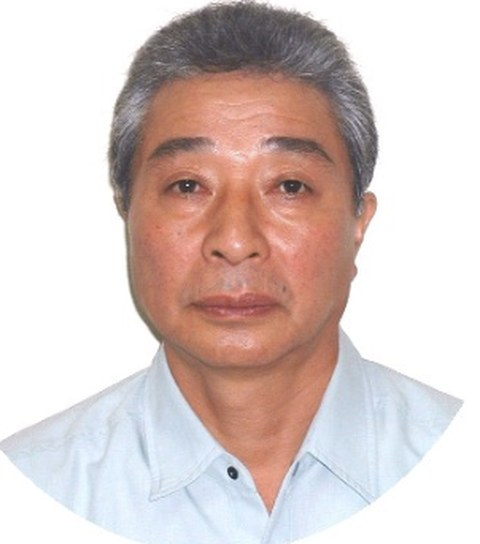

戸建住宅町田市 川上様邸
中野区本町の山友塗装です。外壁・屋根から、お風呂のバスタブ、店舗やビルの改修まで。無臭・無公害の塗料と自社の職人で、ていねいに仕上げます。

F☆☆☆☆の水性塗料や、リボス・アウロなど蜂蜜・オリーブ・柿などからできた自然塗料を使います。マイルドなにおいで乾きも早く、住みながらの工事でも安心です。
大工・左官・溶接・板金・防水・コーキング・クロスまで、多少の工事なら山友塗装で職人をご用意します。工事が終わった後のメンテナンスも安心です。
「いくらかかるのか分からない」が一番の不安。単価表と、30坪2階建ての御見積例を公開しています。御見積は、ご依頼から1週間以内にお出しします。

私は、塗装の枠にこだわらず、関連する工事は日夜努力しています。少しの大工工事・左官・溶接・板金・防水・コーキング・クロス・設備等、多少の工事は山友塗装にて出来る職人を用意し、それに伴う機械工具等も用意しています。住宅リフォーム工事も出来る体制に整いました。是非、山友塗装を便利に利用していただきたいです。
中野区・杉並区を中心に、戸建住宅からビル・マンション、お風呂のバスタブまで手がけてきました。


傷みが進んでからだと、工事費用も大きくなります。早めのお手入れで、お家の寿命を延ばしましょう。
お伺いして、お客様と一緒にお家の状態を診断してから、確かな金額をお出しします。